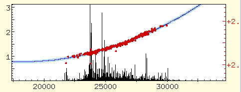
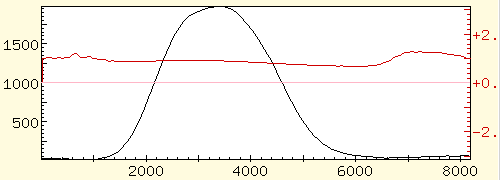

The fitted phase
This shows the phase fit obtained from a line spectrum:

The blue line is the polynomial fitted to the red phase points. The
light blue lines mark the 66% confidence interval for the phase
fit.
This is the result from a continuum spectrum. The scale in this case
is a point scale, rather than a wavenumber scale:

Back to transforming